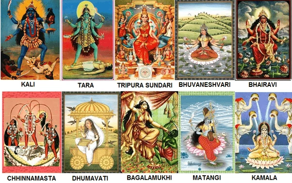

Astrology
&
Numerology
दस महाविद्याएं

About Pandit Hariom Butoliya
क्या आप अव्यवस्थित जीवन जी रहे हैं? क्या आप जीवन में लगातार समस्याओं से जूझ रहे हैं और नहीं जानते कि कैसे करा जाए उनका अंत? यदि हां, तो पंडित हरिओम बुटोलिया निश्चित रूप से सद्भाव और सफलता का मार्ग प्रशस्त कर सकते हैं आपके लिए। पंडित हरिओम बुटोलिया एक प्रतिष्ठित और उच्च विद्वान ज्योतिषी, वास्तु शास्त्र, तंत्र, मंत्र हैं। अनुष्ठान एवं रत्न सलाहकार। दयालु और विनम्र, उनका व्यक्तित्व और सकारात्मक दृष्टिकोण जीवन के प्रति अविश्वसनीय रूप से प्रेरणादायक हैं। भोपाल में शीर्ष ज्योतिषी के रूप में स्थान, उनका समर्पण और अपने काम के प्रति प्रतिबद्धता ने उन्हें अपने ग्राहकों के बीच श्रद्धा और सम्मान दिलाया है समसामयिक. अपनी विशेषज्ञता और गहन ज्ञान के साथ, उन्होंने इसमें एक उल्लेखनीय जगह बनाई है थोड़े ही समय में वैदिक ज्योतिष का आध्यात्मिक क्षेत्र। एक प्रसिद्ध वास्तु विशेषज्ञ के रूप में, पंडित हरिओम बुटोलिया यह सुनिश्चित करने के लिए प्रभावी वास्तु उपाय भी प्रदान करते हैं सकारात्मक एवं शांतिपूर्ण वातावरण. आवासीय के अलावा, उनकी विशेषज्ञता अन्य क्षेत्रों तक फैली हुई है वास्तु जैसे वाणिज्यिक वास्तु और राजनीतिक वास्तु। पंडित हरिओम बुटोलिया ने कई जरूरतमंदों की मदद की है |
0 +
Years of experience
0 M+
Lives Touched
0 +
Awards for
Excellence
5/5
Rated on google
Astrology & Vastu Services
.webp)
Tantra
तंत्र शास्त्र एक प्राचीन भारतीय तांत्रिक साहित्य है जिसमें विभिन्न धार्मिक, योगिक, और तांत्रिक विधियाँ विविध रूपों में उपलब्ध हैं। यह शास्त्र विभिन्न धार्मिक सिद्धांतों, योगीय अभ्यासों, मंत्रों, और विभिन्न पूजा पद्धतियों को समाहित करता है।
मंत्र शक्ति,योगिक अभ्यास,पूजा और उपासना,तंत्रिक तिलक और अनुष्ठान,वामाचार और दक्षिणाचार,शाबर मंत्र और तंत्र विद्या |
PANDIT HARIOM BUTOLIYA
PANDIT HARIOM BUTOLIYA
PANDIT HARIOM BUTOLIYA
PANDIT HARIOM BUTOLIYA
PANDIT HARIOM BUTOLIYA
PANDIT HARIOM BUTOLIYA
PANDIT HARIOM BUTOLIYA
PANDIT HARIOM BUTOLIYA
PANDIT HARIOM BUTOLIYA
PANDIT HARIOM BUTOLIYA
PANDIT HARIOM BUTOLIYA
PANDIT HARIOM BUTOLIYA
PANDIT HARIOM BUTOLIYA
PANDIT HARIOM BUTOLIYA
PANDIT HARIOM BUTOLIYA
PANDIT HARIOM BUTOLIYA
PANDIT HARIOM BUTOLIYA
PANDIT HARIOM BUTOLIYA
PANDIT HARIOM BUTOLIYA
PANDIT HARIOM BUTOLIYA
PANDIT HARIOM BUTOLIYA
PANDIT HARIOM BUTOLIYA
PANDIT HARIOM BUTOLIYA
PANDIT HARIOM BUTOLIYA
PANDIT HARIOM BUTOLIYA
PANDIT HARIOM BUTOLIYA
PANDIT HARIOM BUTOLIYA
What is The Need For
Consulting An Astrologer
- भविष्य ज्ञान: लोग ज्योतिष से अपने भविष्य के बारे में जाना चाहते हैं, जैसे कि आने वाले समय में होने वाली घटनाएं, व्यावसायिक स्थिति, स्वास्थ्य, और प्रेम जीवन।
- समस्याओं का समाधान: कुछ लोग ज्योतिष की मदद से अपने जीवन के किसी क्षेत्र में आने वाली समस्याओं का समाधान ढूंढ़ने में विशेषज्ञ से सलाह लेना चाहते हैं।
- मुहूर्त और उत्सव: विवाह, गृह प्रवेश, या किसी अन्य महत्वपूर्ण समारोह के लिए भी लोग ज्योतिषियों से सहायता लेते हैं ताकि वे सही मुहूर्त का चयन कर सकें।
- आत्म-विकास और अध्यात्मिकता: कुछ लोग अपने आत्म-विकास और अध्यात्मिक उन्नति के लिए ज्योतिष का सहारा लेते हैं और ज्योतिषियों से परामर्श प्राप्त करते हैं।
लोग ज्योतिषियों से सलाह लेने का मुख्य कारण होता है कि उन्हें लगता है कि ज्योतिष उनके जीवन में होने वाली घटनाएं और उनकी भविष्यवाणी के माध्यम से समझने में मदद करेगा। ये कुछ मुख्य कारण होते हैं:
Gallery
.webp)
.webp)
.webp)

Reviews

Brijesh Makoriya
I have been in touch with guruji for last 8 years. He is my guruji, family, advisor and everything. Can't think of living my life happily and successfully without him. He has showed correct path to me, my family, friends and everyone round. Thanks for being part of me life and making me a better human being .. Guruji ki Jai ho
Dileep Shrivastava
Guruji gave a new direction to my life. I am glad you are part of my life Guruji is my guru, friend, family, respected elder... I life is comfortable and progressive under his guidance. Thanks for being part of my life.
Rajesh Agrawal
Finally...my search for good astrologer has come to an end. I was looking for astrologer but got elder brother or say family member....i can rely on. Thanks for making those extra efforts to make my life beautiful

Arpit Khare
गुरुजी प्रणाम चरण स्पर्श🙏🙏🙏। मेरे जीवन में आज जो भी खुशियां और सफ़लता प्राप्त हुई है वो आपके ही आशीर्वाद का प्रताप है। आपके स्नेह और आशीर्वाद से मेरा नीरस जीवन फिर से पल्लवित और पुलकित हो उठा।मेरे जीवन में आज जो भी नवीन और सुखद परिवर्तन आए हैं, उसका समस्त श्रेय आपकी असीम अनुकम्पा को जाता है । बस ऐसे ही अपनी कृपा बनाए रखना। 🙏🙏🙏
Amit Sharma
Guru ji ke dwara krae jane bale anushthan sabhi safal hote dekhe gaye hai. Bahut yogya jyotishi hea. Tantra ka bhut gyan hai.
Niharika Dwivedi
You might know your destination and you might also be determined to achieve it, but knowing the way to reach the destination makes it a lot easy to reach your dreams 😊😊😊.....and Guruji will not only guide you the way but will himself become one 😇.....so just believe your instincts and he'll open heartedly welcome you.💙
KS Aniket
4 years ago Nothing better than a person who can relate astronomy with science, which eventually makes you start believing in the stream of astrology & stars. Guruji is someone, who can actually makes you realise a new way to see your life. Extremely professional, Motivational, Spiritual, Astrologer yet a simple & a humble Human being Jai Maai Ki 🙏
Kalp Tiwari
Guruji has unique way of Hawan and Anushthan. It's not possible to find someone following proper procedures nowadays. I was mesmerizing to see 20 plus bhramins doing Anushthan with 31+ things. He does not believe in short cuts. Everytime I visit ashram .. felt highest level of inner peace and satisfaction, which is rare in today's times.
kuldeep Sharma
For me God, Puja, Astrology was a joke. Guruji introduced me to real meaning of life and prayers 5 years back. Since than my business has grown 3 fold. His remedies are very simple perfect mix of Vedic astrology and today's time. Now I call guruji my 'Life Coach'
Follow us
Address
Thengdi Bhawan Bharat Mata Chouraha
Bhopal Madhya Pradesh 462003
India